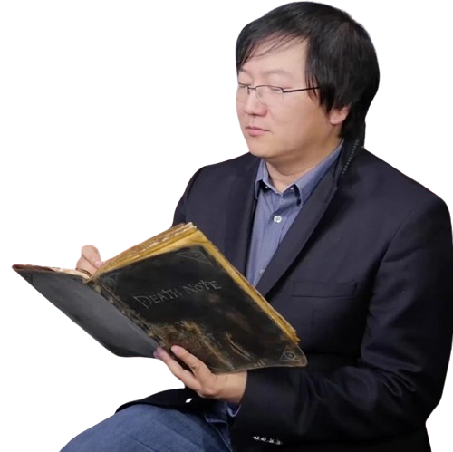

Favorite among anime fans
As a child, I often wandered the streets. When I reached the T-junction I turned right and at the next intersection I turned left. Thus, alternating right and left turns, I climbed quite far from home. When the intersections ended, I turned around and walked back. But on the way back I encountered only side streets - and not a single intersection. “What a mystery... What kind of tricks?” - I thought. I returned home, asking passers-by for directions. This is the kind of stupid thing I did as a child.
Tsugumi Ohba
Tsugumi Ohba (Japanese: 大場 つぐみ, Hepburn: Ōba Tsugumi) is the pen name of a Japanese manga writer, best known for authoring the Death Note manga series with illustrator Takeshi Obata from 2003 to 2006, which has 30 million collected volumes in circulation. The duo's second series, Bakuman. (2008–2012), was also successful with 15 million in circulation. In 2014, Ohba collaborated with My Little Monster creator Robico for the one-shot "Skip! Yamada-kun". Another series with Obata, Platinum End, was serialized in the monthly Jump SQ from November 4, 2015, to January 4, 2021
Ohba's real identity is a closely guarded secret. Ohba said they never thought of becoming a manga creator, expecting the Death Note pilot to be passed on by Weekly Shōnen Jump. They have since cited Shotaro Ishinomori, Fujiko Fujio, and Fujio Akatsuka as manga creators by whom they are heavily inspired. Despite being an author, Ohba does not read much, instead they watch a lot of movies, being especially fond of those by Akira Kurosawa and Charlie Chaplin. They cited comedy as their favorite genre, and prefer Japanese films to American ones. The author described themselves as a "clean freak" and usually cleans once a day. Ohba is fond of art lithographs, collects teacups, and develops manga plots while holding their knees on a chair, the last being similar to a habit of L, one of the main characters of Death Note.